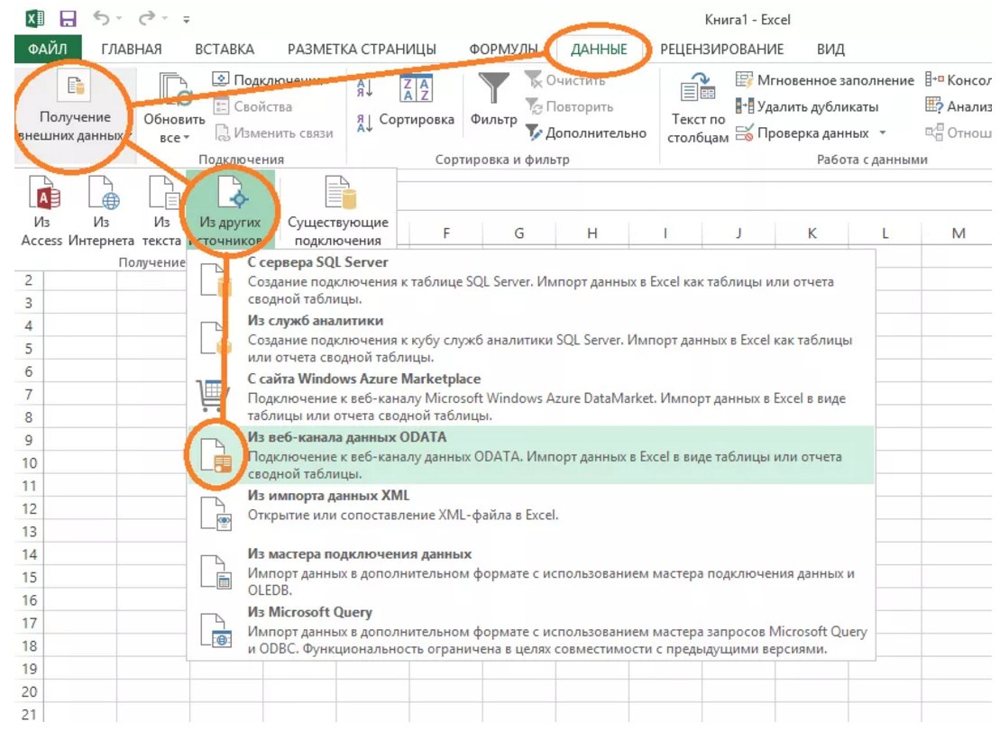
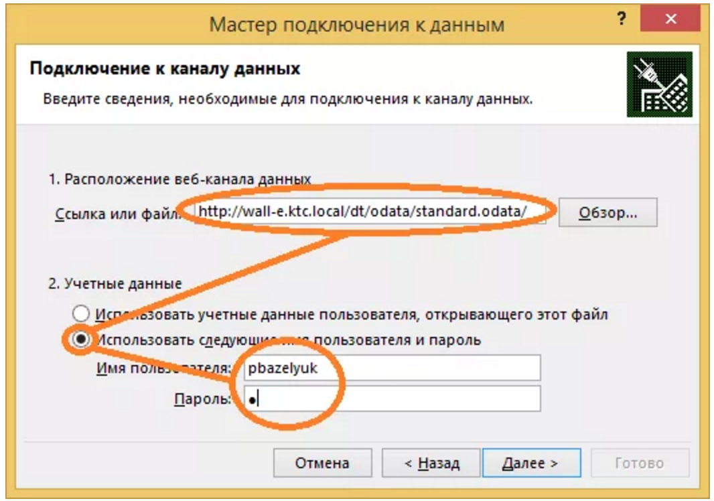
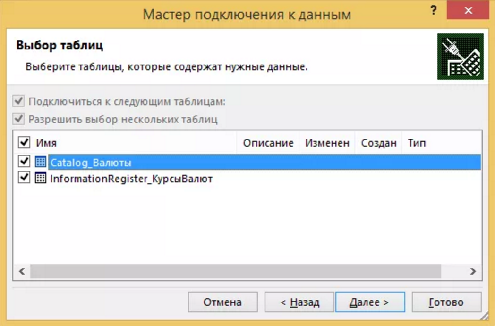
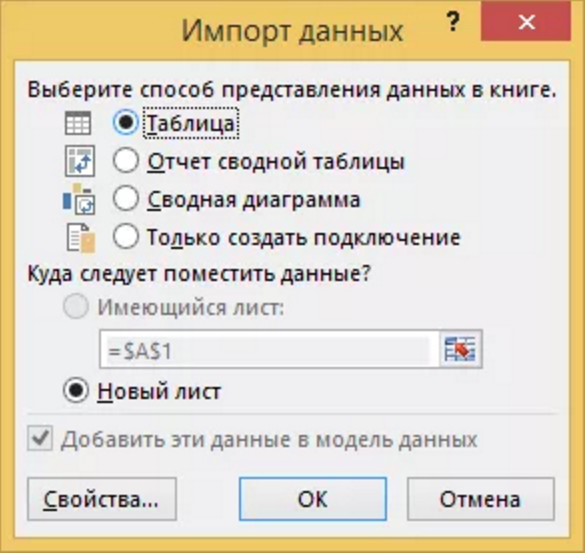

Введение в Open Data Protocol
В 1С Предприятие 8.3.5.1068 появилась поддержка автоматического REST-сервиса. Теперь платформа может автоматически формировать REST интерфейс для всего прикладного решения. Вы привычным образом публикуете его на веб-сервере и после этого сторонние системы могут обращаться к вашему приложению с помощью HTTP запросов. В качестве протокола доступа платформа использует протокол OData версии 3.0. Это открытый веб-протокол для запроса и обновления данных. Он позволяет оперировать данными, используя в качестве запросов HTTP-команды. Получать ответы можно в различных форматах, но пока присутствует поддержка формата Atom/XML.
7 причин, почему интеграция стала приятной
Подготовительный этап
Возникают трудности? Посмотрите видео: https://youtu.be/1o-wOZPNfb4
Интеграция с Excel
Бывают случаи, когда нужно получить данные из информационной базы «1С:Предприятие 8» и быстро обработать их. Работая с бизнес-аналитиками, руководителями потребность в данных есть всегда. Чаще всего информацию получить сложно без привлечения программиста, да и процесс передачи понимания что же нужно не так прост. С помощью стандартного сервиса OData, можно получать данные прямо в Excel, использовать все возможности Excel для анализа данных, построения моделей, формирования сводных таблиц и т. п. Самое приятное, что все расчеты будут автоматически обновляться при изменении данных в «1С:Предприятие 8». Рассмотрим поэтапно:

2. настроить подключение к REST сервису «1С:Предприятие 8»

3. отмечаем нужные таблицы, в примере “Справочник.Валюты” и “РегистрСведений.КурсыВалют”

4. импортируем данные из «1С:Предприятие 8»

Для получения детальной информации посмотрите видео: https://youtu.be/Kz72oAjaCco